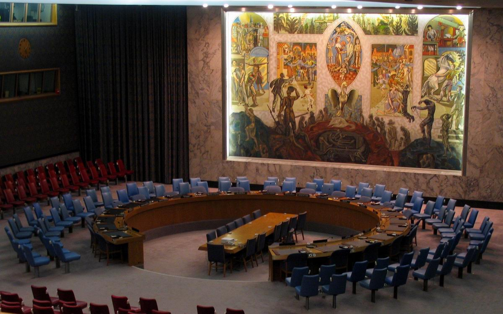
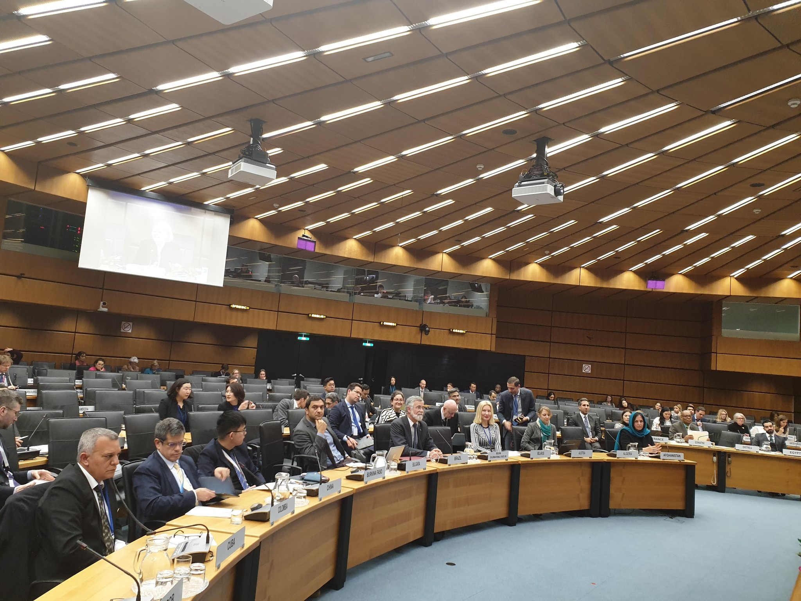

General Assembly
The General Assembly is the main policy-making organ of the United Nations. It is the only
forum that includes all 193 Member States, each having one equal vote. Resolutions are
debated which address important international issues. At PaxMUN, the two GAs will be: GA1 -
disarmament and international security; and GA4 - special political and decolonisation.

Security Council
The United Nations Security Council is the primary organ for the maintenance of international
peace. It is comprised of 5 permanent members: the USA, China, France, Russia and the UK,
which all have veto powers; as well as 10 non-permanent members that are voted in by the
General Assembly. It is the only UN body with the authority to issue binding resolutions on
member states.

Commission on Crime Prevention and Criminal Justice
The Commission on Crime Prevention and Criminal Justice (CCPCJ) is a United Nations Economic and Social Council functional commission situated in
Vienna. The commission is the key body that directs the United Nations' efforts in the areas of
crime prevention and criminal justice.